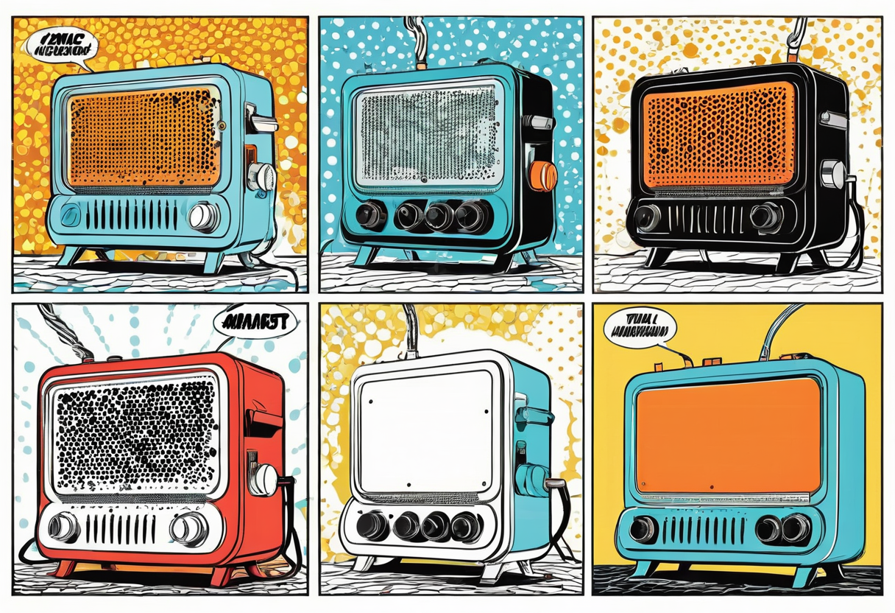
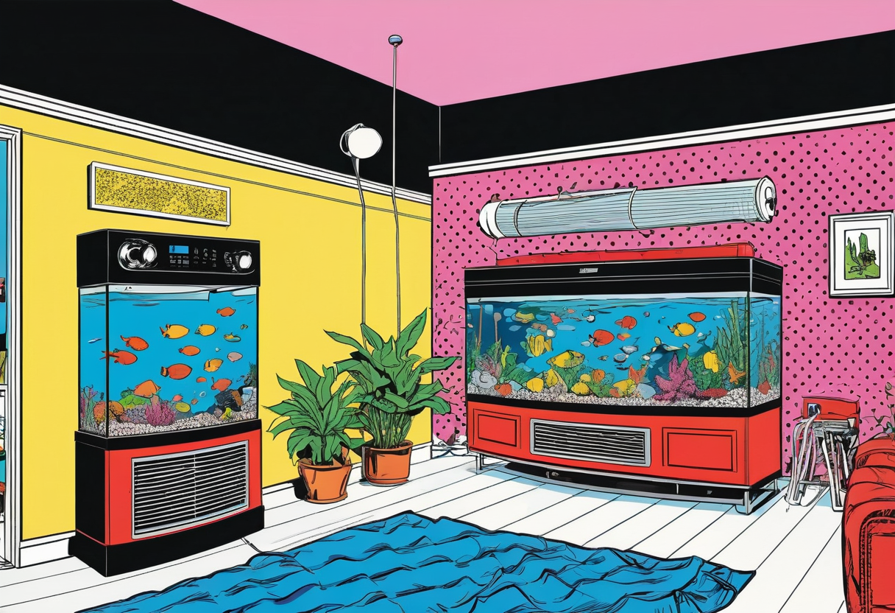

Heizung und Temperatur im Aquarium – Die richtige Wärme für deine Fische
Die richtige Wassertemperatur ist eine der grundlegendsten Voraussetzungen für ein gesundes Aquarium. Fische sind wechselwarme Tiere – ihre Körpertemperatur, ihr Stoffwechsel und ihr Immunsystem hängen direkt von der Umgebungstemperatur ab. Eine falsche oder schwankende Temperatur führt zu Stress, Krankheiten und im Extremfall zum Tod. In diesem umfassenden Leitfaden erfährst du alles über Heizungstypen, die optimale Temperatur für verschiedene Fischarten und die richtige Platzierung der Heizstäbe.
Warum ist die richtige Temperatur so wichtig?
Fische können ihre Körpertemperatur nicht selbst regulieren. Ihr gesamter Organismus – von der Verdauung über die Atmung bis zur Immunabwehr – ist auf eine bestimmte Wassertemperatur ausgelegt. Wenn die Temperatur zu niedrig ist, verlangsamt sich der Stoffwechsel, die Fische werden träge und anfälliger für Infektionen. Bei zu hohen Temperaturen steigt der Sauerstoffverbrauch, das Immunsystem wird geschwächt und die Fische altern schneller.
Die meisten Süßwasserzierfische stammen aus tropischen Regionen, in denen die Wassertemperatur ganzjährig zwischen 24 und 28 °C liegt. In unseren Wohnungen ist die Raumtemperatur mit 20–22 °C oft deutlich kühler – daher ist eine zuverlässige Aquarienheizung unverzichtbar. Für Kaltwasserfische wie Goldfische oder Moderlieschen wird dagegen bewusst auf eine Heizung verzichtet.
Konstante Temperaturen sind dabei wichtiger als der absolute Wert. Schwankungen von mehr als 2–3 °C innerhalb weniger Stunden bedeuten enormen Stress für die Fische. Eine hochwertige Heizung mit gutem Temperaturregler ist daher eine Investition in die Gesundheit deiner Tiere.


Die verschiedenen Heizungstypen im Vergleich
Es gibt mehrere Arten von Aquarienheizungen, die sich in Bauform, Leistung und Einsatzbereich unterscheiden:
Stabheizer (Eintauchheizer)
Der mit Abstand am weitesten verbreitete Heizungstyp. Stabheizer bestehen aus einem gläsernen oder kunststoffummantelten Heizkörper mit integriertem Thermostat. Sie werden vollständig im Wasser untergebracht – meist senkrecht oder schräg an der Rückwand des Aquariums. Stabheizer gibt es in Leistungen von 25 bis 300 Watt. Die Vorteile sind die einfache Handhabung, der günstige Preis und die gute Regulierbarkeit.
Außenfilter-Heizungen (Inline-Heizer)
Diese Heizungen werden direkt in den Schlauchkreislauf des Außenfilters eingebaut. Das Wasser wird erwärmt, während es durch den Filter fließt, und gleichmäßig im Becken verteilt. Der große Vorteil: kein sichtbares Heizgerät im Aquarium, perfekt für Aquascaping und Diskusbecken. Zudem wird eine sehr gleichmäßige Temperaturverteilung erreicht. Inline-Heizer sind teurer in der Anschaffung und etwas aufwendiger zu installieren.
Bodenheizungen (Heizkabel)
Heizkabel werden unter dem Bodengrund verlegt und erwärmen das Wasser von unten. Sie sorgen für eine besonders gleichmäßige Temperaturverteilung und verhindern Kältestau im Bodengrund, der zu Fäulnis führen kann. Bodenheizungen werden vor allem in stark bepflanzten Aquarien und in der Pflanzenzucht eingesetzt. Sie sind weniger effizient als Stabheizer und werden heute seltener verwendet.
Heizmatten
Heizmatten werden unter das Aquarium gelegt und erwärmen das Becken von unten. Sie eignen sich vor allem für Terrarien und Aquarien mit sehr flachem Wasserstand. Für die meisten Standardaquarien sind sie weniger geeignet, da sie die Wärme ungleichmäßig verteilen und einen großen Teil der Energie nach unten abgeben.
Die richtige Heizleistung berechnen
Die benötigte Heizleistung hängt von der Beckengröße, der gewünschten Wassertemperatur und der Raumtemperatur ab. Eine grobe Faustregel ist:
- 20–50 Liter: 25–50 Watt
- 50–100 Liter: 50–100 Watt
- 100–200 Liter: 100–200 Watt
- 200–300 Liter: 200–300 Watt
- 300–500 Liter: 2 × 200 Watt (für Redundanz)
Eine genauere Berechnung: Pro Liter Wasser benötigst du etwa 0,5–1,0 Watt Heizleistung, je nach gewünschter Temperaturdifferenz zur Raumtemperatur. Wenn dein Aquarium auf 28 °C beheizt werden soll und der Raum 20 °C hat, sind 8 °C Differenz mit etwa 0,8–1,0 Watt pro Liter zu überbrücken. Für ein 100-Liter-Becken wären das 80–100 Watt.
Wichtig: Verwende bei größeren Becken (ab 200 Litern) zwei kleinere Heizer anstelle eines großen. Fällt ein Heizer aus, kann der zweite die Temperatur zumindest auf einem überlebensfähigen Niveau halten. Zudem werden Heizstäbe entlastet, wenn sie nicht ständig auf Volllast laufen.
Optimale Temperaturen für verschiedene Fischarten
Verschiedene Fischarten haben unterschiedliche Temperaturansprüche. Hier eine Übersicht der gängigsten Aquarienfische und ihrer bevorzugten Temperaturbereiche:
- Guppys, Platys, Schwertträger: 22–26 °C
- Neonsalmler, Rote Neon: 23–27 °C
- Skalare: 26–30 °C
- Diskusfische: 28–31 °C
- Panzerwelse (Corydoras): 22–26 °C
- Zwergbuntbarsche (Apistogramma): 24–28 °C
- Malawisee-Buntbarsche: 24–26 °C
- Goldfische, Koi: 4–22 °C (keine Heizung nötig)
- Zwerggarnelen (Neocaridina): 20–26 °C
- Sumatrabarben: 22–26 °C
🛒 Empfohlene Produkte
Die richtige Platzierung der Heizung
Die Position der Heizung hat großen Einfluss auf die Temperaturverteilung im Aquarium. Hier die wichtigsten Tipps:
- Neben dem Filter-Ausström: Die beste Position für den Stabheizer ist direkt neben dem Ausströmbereich des Filters. Das erwärmte Wasser wird sofort im Becken verteilt, und der Temperaturfühler des Thermostats erfasst die tatsächliche Beckentemperatur zuverlässig.
- Schräg oder senkrecht montieren: Stabheizer sollten in einem Winkel von etwa 45 Grad montiert werden, damit die aufsteigende Wärme nicht direkt am Thermostat vorbeistreicht und dieser zu früh abschaltet.
- Vollständig eintauchen: Der Heizstab muss vollständig unter Wasser stehen. Betrieb in der Luft führt zur Überhitzung und Zerstörung des Geräts. Markiere dir den Mindestwasserstand auf dem Heizstab.
- Nicht in den Bodengrund stecken: Der untere Teil des Stabheizers sollte nicht im Bodengrund stecken, da die Wärme dort schlecht abgeführt wird und es zu Hitzestau kommen kann.
- Genügend Abstand zu Dekoration: Halte Abstand zu Wurzeln, Steinen und Pflanzen, damit die Wasserzirkulation um den Heizer nicht behindert wird.
Temperaturkontrolle und regelmäßige Überwachung
Die eingebaute Thermostat-Anzeige vieler Stabheizer ist oft ungenau. Verlasse dich nicht ausschließlich darauf – verwende zur Kontrolle mindestens ein separates Thermometer. Idealerweise nutzt du zwei unabhängige Thermometer aus unterschiedlicher Position im Becken. Digitale Thermometer mit externem Fühler sind genauer als analoge Glasmodelle.
Ein digitaler Temperaturregler mit getrenntem Fühler und Schaltrelais ist eine sinnvolle Erweiterung für größere Becken. Er schaltet die Heizung unabhängig vom integrierten Thermostat ein und aus und schützt vor Übertemperatur durch defekte Heizstäbe. Manche Aquariencomputer überwachen zusätzlich die Heizdauer und melden Auffälligkeiten per App.
Wöchentlich solltest du die Temperatur an verschiedenen Stellen deines Aquariums messen. In großen Becken können Temperaturunterschiede von mehreren Grad zwischen Bodennähe und Oberfläche auftreten, besonders bei unzureichender Strömung. Eine gleichmäßige Temperaturverteilung erreichst du durch gute Wasserzirkulation mit dem Filter.
Saisonale Temperaturanpassungen
Im Sommer steigen die Raumtemperaturen oft auf 28–30 °C, sodass die Aquarienheizung kaum noch arbeiten muss. Trotzdem sollte sie eingeschaltet bleiben, um Temperaturschwankungen bei kühleren Nächten auszugleichen. Bei extremer Hitze können folgende Maßnahmen helfen, die Wassertemperatur zu senken:
- Lüfter am Beckenrand (Verdunstungskälte) – aber Achtung: erhöhter Wasserverlust und CO2-Entgasung.
- Beleuchtungsdauer reduzieren oder kühlere LED-Beleuchtung nutzen.
- Tagsüber die Rollos schließen, um direkte Sonneneinstrahlung zu vermeiden.
- Häufigere, kleinere Wasserwechsel mit kühlerem Wasser durchführen.
Im Winter sinkt die Raumtemperatur besonders nachts, was die Heizung stärker belastet. Platziere das Aquarium nicht direkt an einer Außenwand oder in der Nähe von Fenstern, die häufig geöffnet werden. Bei sehr kalten Räumen kann eine zweite Heizung zur Absicherung notwendig sein.
Häufige Heizungsprobleme und ihre Lösungen
- Thermostat klemmt: Der Heizer heizt dauerhaft und das Wasser wird zu warm. Ursache: verkalkter oder defekter Temperaturfühler. Lösung: Heizer austauschen, auf regelmäßige Entkalkung achten.
- Heizer schaltet nicht ein: Das Wasser bleibt kalt. Prüfe die Steckdose, den Netzstecker und die korrekte Einstellung. Zeigt das Kontrolllämpchen nichts an, ist das Gerät defekt.
- Ungleichmäßige Temperatur: Kalte Stellen im Becken. Ursache: unzureichende Strömung oder falsche Platzierung des Heizers. Lösung: Filterausströmung optimieren oder zusätzliche Strömungspumpe einsetzen.
- Heizung läuft ständig: Der Heizer arbeitet dauerhaft auf Volllast. Ursache: zu geringe Heizleistung für die Beckengröße oder zu kalter Standort. Lösung: Heizleistung anpassen oder Becken besser isolieren.
Fazit
Die richtige Heizung und Temperaturkontrolle sind für die Gesundheit deiner Fische und Pflanzen unverzichtbar. Wähle die Heizleistung entsprechend der Beckengröße und der gewünschten Temperatur, platziere den Heizer optimal im Wasserstrom und kontrolliere die Temperatur regelmäßig mit zuverlässigen Thermometern. Investiere in hochwertige Heizgeräte mit präzisen Thermostaten und erwäge die Anschaffung eines unabhängigen Temperaturreglers für die Absicherung. Deine Fische werden es dir mit Vitalität, Farbe und natürlichem Verhalten danken.
Weitere Informationen zur technischen Ausstattung deines Aquariums findest du in unserem Technik-Überblick.